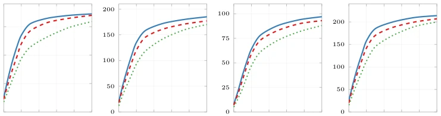
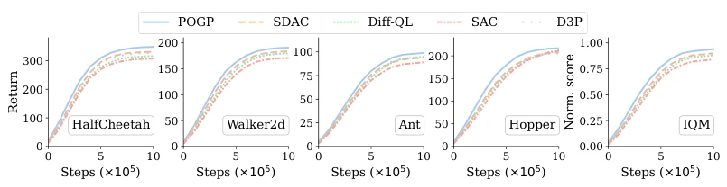
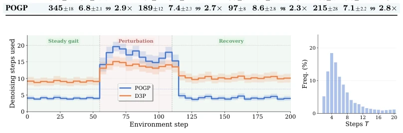

This paper teaches a lesson to the "rigidity" of diffusion policies: do not always run full 20 steps in one go; stop when appropriate. POGP's core logic is very appealing — treat the "intermediate process" as formal actions for training, and use it as "brake pads" simultaneously. It uses Bellman recursion to backpropagate the value function to every step, making intermediate actions "usable" and teaching the model to "know when to stop". The results are indeed excellent, 2.7 times faster than SOTA and scoring more points, simply a model of "making the horse run while making it eat less grass". However, the criticism points are obvious: this method performs exceptionally well in relatively simple simulation environments like MuJoCo, but when it comes to complex humanoid robots or high-dimensional manipulation tasks, will this "dynamic step count" fail due to excessive noise? Moreover, relying on deterministic denoiser (DDIM) is stable, but sacrifices the multimodal generation capability that diffusion models are originally good at, which is a pity. Overall, this is a clever work that forcibly binds "computational efficiency" and "policy quality", but there is still a distance from true general embodied intelligence.
研究动机Motivation
扩散策略（Diffusion Policies）在连续控制领域表现优异，能捕捉复杂的多模态动作分布，但其核心痛点在于推理时的计算瓶颈。现有方法如Diffusion-QL (Wang et al., 2022) 和 IDQL (Hansen-Estruch et al., 2023) 通常只优化最终的终端动作，导致中间的去噪步骤（intermediate prefixes）处于无监督状态，生成的中间动作往往质量低劣且不可执行。这种“终端优化”策略造成了严重的训练-测试不匹配：在需要动态调整计算预算的场景下，模型无法判断何时该停止。虽然近期工作如D3P (Yu et al., 2025) 引入了适配器来动态分配步数，但其停止模块与策略本身解耦，且中间步骤并未被优化为高质量的可执行动作。此外，传统的加速方法（如蒸馏或一致性模型）往往固定了步数，无法根据任务难度自适应调整。因此，如何在不牺牲性能的前提下，让扩散策略学会“何时停止”，并让中间过程本身具备高价值，是提升其在边缘设备部署可行性的关键。
Diffusion Policies perform excellently in the continuous control domain, capable of capturing complex multimodal action distributions, but their core pain point lies in the computational bottleneck during inference. Existing methods such as Diffusion-QL (Wang et al., 2022) and IDQL (Hansen-Estruch et al., 2023) typically only optimize the final terminal actions, causing the intermediate denoising steps (intermediate prefixes) to be in an unsupervised state, where generated intermediate actions are often of poor quality and unexecutable. This "terminal optimization" strategy causes severe training-testing mismatch: in scenarios requiring dynamic adjustment of computational budget, the model cannot judge when to stop. Although recent work such as D3P (Yu et al., 2025) introduces adapters to dynamically allocate steps, its stopping module is decoupled from the policy itself, and intermediate steps are not optimized into high-quality executable actions. Furthermore, traditional acceleration methods (such as distillation or consistency models) often fix the number of steps and cannot adaptively adjust based on task difficulty. Therefore, how to enable diffusion policies to learn "when to stop" without sacrificing performance, and make the intermediate process itself high-value, is key to improving their feasibility for deployment on edge devices.
POGP proposes a framework named "Prefix Optimal Generation Policy", the core of which lies in introducing the Prefix Value Function (Prefix Value Function, PVF). The overall process is divided into two stages: training and inference. During training, the model shares a K-step denoising chain, simultaneously optimizing three components: Environment Critic (Q), Prefix Critic (V), and Policy (π). Innovation 1 is the definition and training of PVF: unlike traditional methods focusing only on terminal Q-values, POGP defines V_t(s, a_t) as the expected return after completing denoising from intermediate step t. For efficient training, the authors derived the "Prefix Bellman Recursion" (Hazard Bellman Recursion), utilizing V_t = h * Q(s, a_0) + (1-h) * V_{t-1}(s, a_{t-1}) to backpropagate value information from the terminal, avoiding expensive full-chain rollback. Innovation 2 is gated joint optimization: to prevent early unstable V-values from interfering with policy training, the authors designed a gated loss function, gradually increasing the weight of prefix supervision only after V-values converge. Innovation 3 is dynamic stopping and completion: during inference, the difference in V-values between two consecutive steps (Δ_t) is calculated as a stopping signal, terminating early when the gain falls below the threshold. If stopped early, a lightweight completion mapping network (Completion Map, g_ω) is used to project the truncated intermediate actions back into the high-quality action space, ensuring execution effectiveness.

Figure 3: Prefix value convergence trajectories. Vψ at three refinement levels: t=1 (solid), t=5 (dashed) and t=10 (dotted) across 100K training steps. The boundary-anchored level (t=1) con- verges fastest, consistent with backward induction through the Hazard Bellman recursion.
Experiments were conducted on four classic MuJoCo environments (HalfCheetah, Walker2d, Hopper, Ant), comparing 12 baselines, including traditional RL (TD3, SAC, PPO) and various diffusion policies (Diff-QL, D3P, etc.). The main metrics are IQM (Interquartile Mean) and average denoising steps. Results show that while maintaining full-chain performance (IQM 0.942), POGP requires an average of only 6.8 steps (HalfCheetah), reducing iteration count by 18.2% compared to D3P, and performance is 3.5% higher. In terms of adaptive computation, POGP can keenly perceive environmental perturbations: requiring only 3-5 steps in steady state, and automatically increasing to 15-20 steps for recovery when subjected to external force perturbations, demonstrating extremely strong dynamic adaptability. Ablation studies confirm that removing prefix training leads to a significant performance drop, and the gating mechanism is crucial for stability. Figure 2 intuitively shows the step distribution of POGP under different states, proving the effectiveness of its "compute allocation on demand".

Figure 1: Learning curves and aggregate IQM across 10 seeds. Curves show the mean across seeds, with shaded regions indicating variability. The rightmost panel reports aggregate normalized IQM. POGP’s improvement is consistent across all four environments.

Figure 2: POGP adaptively allocates denoising compute: (Left) Mean denoising steps per action on HalfCheetah-v4, averaged over 100 time-aligned evaluation rollouts (10 seeds × 10 episodes; shaded regions: ±1 std. dev.). At step 55, a horizontal velocity impulse (∆v = −2.5 m/s) is applied to the torso. POGP adaptively increases to ∼15–20 steps during recovery, returning to a 3–5 step baseline once gait stabilizes. D3P shows only marginal increase during perturbation and maintains consistently higher step counts. (Right) Step distribution over 100 unperturbed rollouts: POGP mode = 4 steps vs. D3P mode = 9, confirming POGP allocates minimal compute on routine states while D3P maintains higher iteration counts.